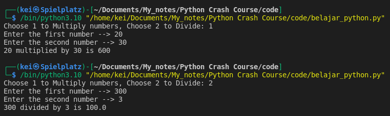
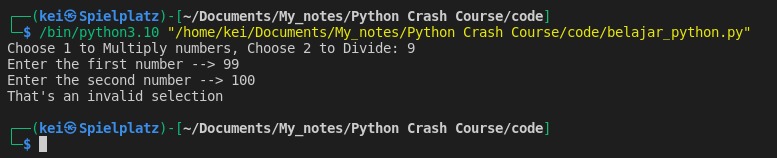
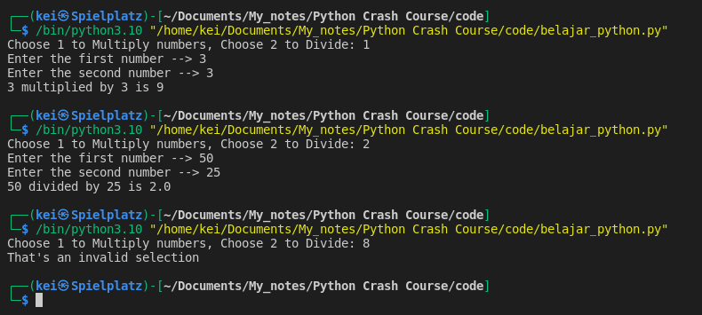
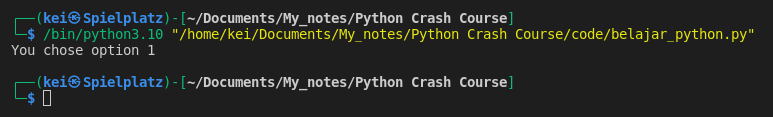
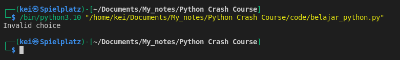
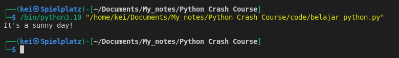
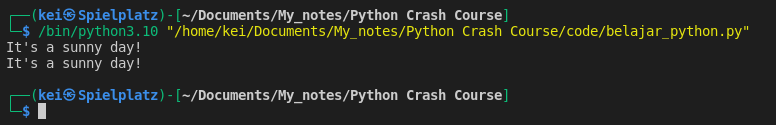
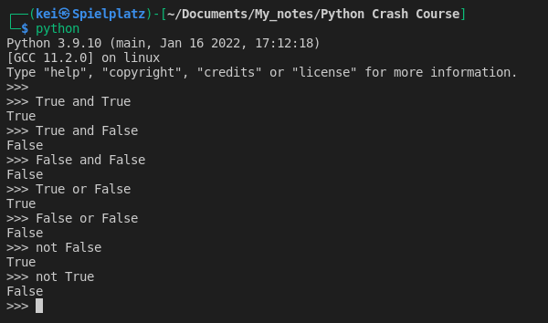

- With branching using If, Elif, or Else statements I can control the execution of the code.
- The code block will only be executed if the condition is True.
if condition:
run this code
elif other_condition_occured:
run this code over here not the one above
else:
run this code for anything else that don't meet the conditions above
- Example:
option = input("Choose 1 to Multiply numbers, Choose 2 to Divide: ")
num1 = int(input("Enter the first number --> "))
num2 = int(input("Enter the second number --> "))
if option == "1":
print(f"{num1} multiplied by {num2} is {num1 * num2}")
elif option == "2":
print(f"{num1} divided by {num2} is {num1 / num2}")
else:
print("That's an invalid selection")

-
The usage of if, elif, and else in the code above works fine if the user choose either option 1 or 2, but it will still prompt the user to enter the first number even when the user entered something else other than 1 or 2 
-
To fix this I can use Nested If Statements
option = input("Choose 1 to Multiply numbers, Choose 2 to Divide: ")
if option == "1" or option == "2":
num1 = int(input("Enter the first number --> "))
num2 = int(input("Enter the second number --> "))
if option == "1":
print(f"{num1} multiplied by {num2} is {num1 * num2}")
else:
print(f"{num1} divided by {num2} is {num1 / num2}")
else:
print("That's an invalid selection")

- Example:
user_choice = "1"
paid = True
if user_choice == "1" and paid:
print("You chose option 1")
elif user_choice == "2":
print("You chose option 2")
else:
print("Invalid choice")
-
For if statement to be executed, user_choice and paid both have to be True 
-
When paid is changed to False the if statement will not be executed, it will go to check for the next statements and in this case it will run the else statement
user_choice = "1"
paid = False
if user_choice == "1" and paid:
print("You chose option 1")
elif user_choice == "2":
print("You chose option 2")
else:
print("Invalid choice")

- Example:
raining = True
a = "Bring an umbrella"
b = "It's a sunny day!"
if not raining:
print(a)
else:
print(b)
-
This will execute the else statement because the if statement will check for the opposite value of raining variable. 
-
The code above can be simplified and written in one line using Ternary operators
raining = True
a = "Bring an umbrella"
b = "It's a sunny day!"
print(a) if not raining else print(b)
print(b) if raining else print(a)

- See the Boolean Truth Table as reference 